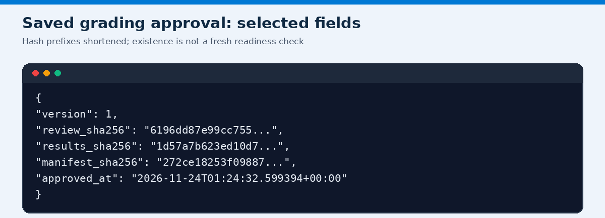

Logic before AI: approvals, checkpoints and recovery
Part 3 of 8 · For developers · Source walkthrough with saved artifact evidence
The most important architecture decision in this grader is not a model name. It is that model output cannot promote itself into an approved result.
In Part 2, OCR read John's class as e: John and his name as part of a printed heading. The saved report nevertheless associates his ID with John in class C. That separation between raw output and reviewed output must exist in the application logic, not only in a prompt.
This article explains the boundaries using actual artifact structures and source excerpts. It does not pretend that every recovery path has been exercised against this saved exam.
Step 1: Make dependencies explicit
Inputs include the exam configuration, scans, roster, rubric and region definitions. The pipeline does not simply ask whether their files exist. It checks whether the appropriate approvals still match the relevant artifacts.

Figure 1. Code-authored explanatory diagram, not a runtime trace. Editable source is included in diagrams/architecture.mmd.
The actual approved_inputs() starts with these calls:
approved_attendance(config, config_dir, config_path)
questions = read_approved_rubric(config, config_dir, config_path)
root, manifest = verify_run(config, config_dir, config_path)
It then loads the region draft, checks current region approval, validates complete annotations, and compares available question labels with the rubric.
Expected output of this boundary: either validated inputs for the next stage or an exception. This is a source contract, not a newly captured exception transcript. Part 1 supplies a real stopping case from the separate scan checker.
Step 2: Inspect what the saved approvals bind
The saved grading approval contains these keys:
version
review_sha256
results_sha256
manifest_sha256
approved_at

Figure 2. Selected fields from a real local approval artifact. Hash prefixes are shortened for presentation.
The source in grade_review.py checks:
if (
approval.get("version") != 1
or approval.get("review_sha256") != file_hash(root / "review.xlsx")
or approval.get("results_sha256") != file_hash(root / "results.json")
or approval.get("manifest_sha256") != file_hash(root / "manifest.json")
):
raise ValueError("Grading review changed since approval")
This excerpt demonstrates how a change is detected. It does not establish that every historical artifact is currently valid. The current example also has a scan-check blocker, so the mere existence of approval.json is not a fresh readiness certificate.
Hashes support local consistency checks. They do not make a directory tamper-proof against someone able to rewrite both files and approval records.
Step 3: Keep raw, reviewed and reported values distinct
The saved run gives us three useful views:
| Artifact | Role | Actual example |
|---|---|---|
grading/results.json |
Raw inference/checkpoint data | Cut-off Q3 transcription and moderator note |
grading/review.xlsx |
Teacher review fields | Explicit manual mark 2 and reviewed = yes |
reports/score_report.xlsx |
Saved report output | John, class C, total 10 |
A developer should resist flattening these into one mutable record. Otherwise a manual edit can erase what the model originally proposed, making later diagnosis difficult.
Suggested operator prompt
Explain the differences between raw results, review fields and reports.
Show the affected script and question keys.
Do not replace raw model results or record approval for me.
Output to expect: a comparison keyed by script/question, not a silent rewrite. The figures in Part 2 provide the actual comparison for this exam.
Step 4: Use checkpoints without promising exactly-once billing
The saved results.json records:
{
"version": 1,
"checkpoint_version": 1,
"completed": true
}
The completed run contains four script metadata records and 20 question-mark records. These counts describe the saved checkpoint; they do not mean 20 billable API requests.
The application uses atomic checkpoint publication and a run lock to avoid conflicting writers. On a suitable interrupted run, an operator previews:
handwriting-grader resume-grading --exam /private/exam.yaml
New paid work still needs fresh consent. A request accepted by Azure just before a crash may not be checkpointed locally. Resumption can repeat that request and incur a second charge. “Resumable” therefore means preserving recorded work—not exactly-once provider execution.
Do not run resume against a completed run simply to obtain a screenshot. Do not delete a live lock.
Step 5: Choose retry or child regrade deliberately
A completed run with failed work uses retry-grading; a revised rubric or crop can require an isolated child regrade.
handwriting-grader regrade --exam /private/exam.yaml \
--run q3-review-1 --question Q3 \
--model-config /private/priced-config.yaml \
--endpoint https://YOUR-RESOURCE.openai.azure.com --api-version v1
This is a preview example, not a run we performed. A crop/rubric change requires its separately reviewed proposal. The selected question is rerun for all present students, not just one student's chosen answer. The child has its own output directory and requires review of all identities and scores.
Output not captured: there is no child-run comparison image in this package. The saved flagged answer motivates the workflow, but it is not evidence that a corrected child run exists.
What this design buys you—and what it does not
It gives operators inspectable artifacts, explicit state transitions and opportunities to stop. It does not establish that a rubric is fair, a crop is complete or an approved score is educationally correct.
The actual scan blocker and OCR failures show why these boundaries matter. A system that can explain why it stopped is more useful than one that turns every failure into an apparently complete report.
Next: inspect the images and alignment logic.
Implementation references: approval validation and targeted regrading.